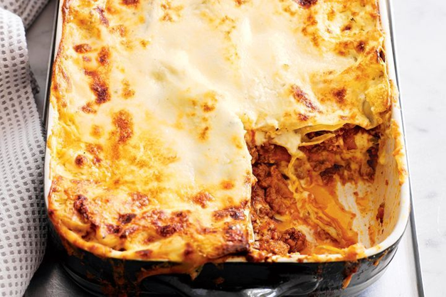

34 recipes from Nanna we're making in times like these
Make like Nanna and recreate these simple classic recipes we had when we were growing up. Golden syrup cakes, cottage pies, classic lasagnes and lemonade scones and plenty more are all back on the menu.

1. Nanna's golden syrup custard cake
Just the way Nanna used to make it, this easy cake will become your go-to afternoon or weekend treat. You'll love the creamy custard centre and sticky golden syrup drizzle.2. Plum and coconut slice
This plum and coconut slice will take you back to afternoon tea in Grandma's kitchen.3. Apricot chicken
"Pair sweet/tart apricots with succulent chicken and the saltiness of capers and olives for our modern take on a classic" - Matt Preston4. Grandma's curried sausages
Nothing is as comforting as a big plate of traditional curried sausages.5. Madeira cake
Nothing beats a good-old retro style cake to end a meal, celebrate a special occasion or simply enjoy as a scrumptious treat.6. Classic crumbed cutlets
Go retro with these classic crumbed cutlets on fluffy mashed potato.7. Pear and ginger pan pudding
Turn pears into this aromatic baked pudding just like Nan used to make.8. Ginger cake
“This is a special recipe for both sides of my family. My maternal nana shared it with my paternal nana after a family event. My mother sadly passed away from cancer but the recipe will live on and be handed down to yet another generation as my daughter is expecting a baby girl!” – Julie Carrington, NSW9. Classic apple pie
Fill your kitchen with the sweet fragrance of apple pie - this one is just like Nanna's and everyone will love it!10. Lemonade scones
This scone recipe has many fans - try it yourself and see if you're one too!11. Quiche Lorraine
Classic quiche lorraine is great served as a starter snack or part of dinner.

12. Classic lasagne
Buffalo mozzarella and parmesan cheese make this traditional lasagne extra cheesy.13. Roast dinner meatloaf
We've turned the classic roast dinner into all-in-one dinner meatloaf, featuring a savoury beef mince base and a creamy potato and pumpkin mash topping.14. Spiced cake with cinnamon sugar icing
A scrumptious 'nanna style' cake made with cinnamon, ginger, nutmeg and sour cream. Perfect with a cup of tea.15. Pineapple upside-down cake
Take a step back in time as you rediscover this tropical tutti-frutti favourite cake recipe.16. Classic bread and butter pudding
For the perfect cosy dessert to devour on a night in, you can't look past classic bread and butter pudding.17. Classic lamingtons
It's hard to resist this much-loved Australian classic.18. Classic baked vanilla cheesecake
Smooth, creamy and with a hint of vanilla - this classic cheesecake is hard to beat.19. Passionfruit coconut vanilla slice
We've given classic vanilla slice a twist with coconut, white chocolate and a passionfruit glaze.20. Classic scones with jam and cream
Try your hand at freshly made scones. Work quickly and lightly, being mindful not to overwork the dough.21. Melting moments
For a simple sweet treat try these delicious melting moments with raspberry puree!
22. Classic finger buns
Remake the classic finger bun in a few simple steps.23. Classic moussaka
This signature Mediterranean dish featuring succulent lamb mince topped with creamy bechamel sauce is perfect for your next family feast.24. Old-school lemon chicken
Try this favourite Chinese takeout recipe at home and turn it into a family classic.25. Blackberry ripple madeira cake
The classic maderia cake gets a new look with a blackberry sauce ripple and crispy almond topping.26. Classic custard tarts
Who can go past a crunchy pastry protecting a centre of eggy custard.27. Curtis Stone's granny's cottage pie
“Sometimes you just feel like a classic comfort meal. This hearty dish is pretty special to me – my Granny used to make it for me and my brother.” – Curtis28. Classic butter cake
Serve a classic favourite with this basic butter cake recipe. This moist vanilla sponge is topped with a versatile creamy vanilla buttercream icing and rainbow sprinkles.29. Vanilla slice
Reminisce with a childhood favourite with this classic vanilla slice recipe30. Potato and leek gratin
Go retro with this classic gratin.31. Beef & vegetable pasties
Puff pastry filled with beef, corn and peas makes for a hearty lunch or snack option.32. Duchess potatoes
This side will satisfy - it's warm, hearty and full of classic memories.33. Apple crumble slice
It's like magic! We've turned traditional apple pie into a fabulous slice34. Banana cake with a nutty crumble topping
“This humble banana cake reminds me of my mum and my 1950s childhood. The war-era recipe is like no other and the cake has a delicious nutty caramel topping, which makes it really special.” – Ann Leray, SAMailing
Sign up for out mailing list to get latest update and offers
We respect your privacy
© Copyright: Group 5 - FPT Aptech